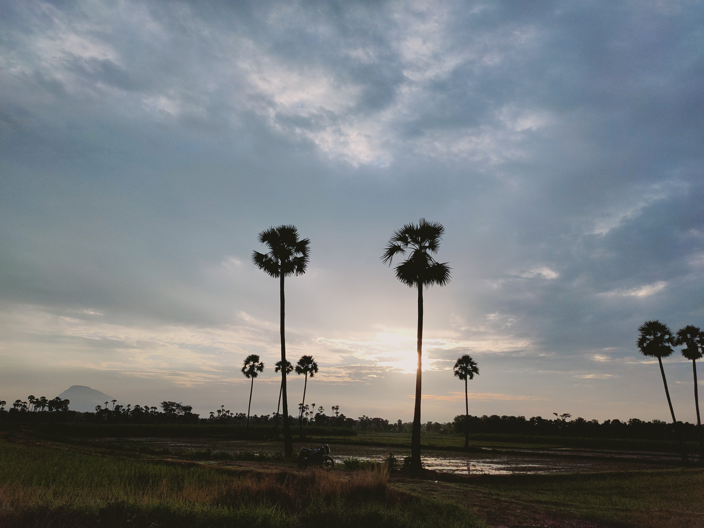
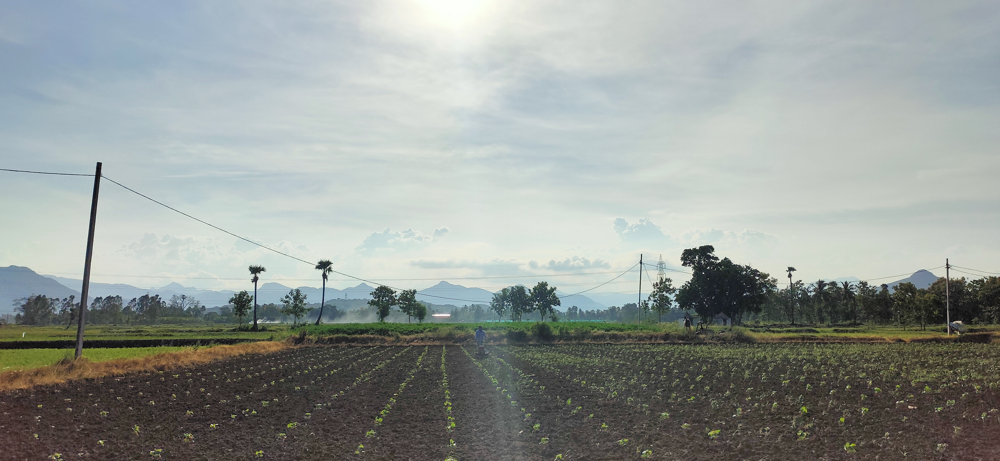
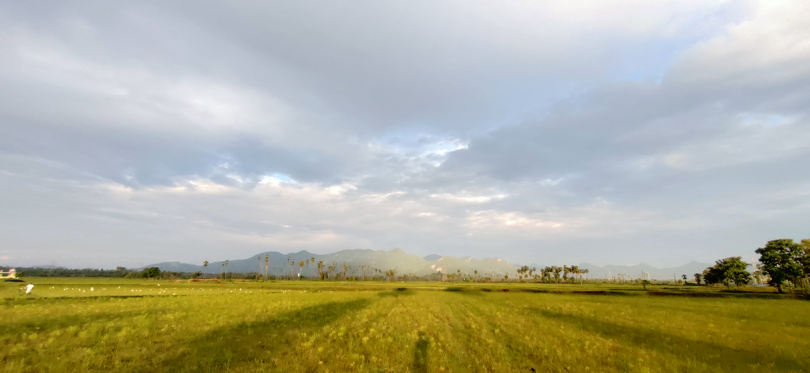
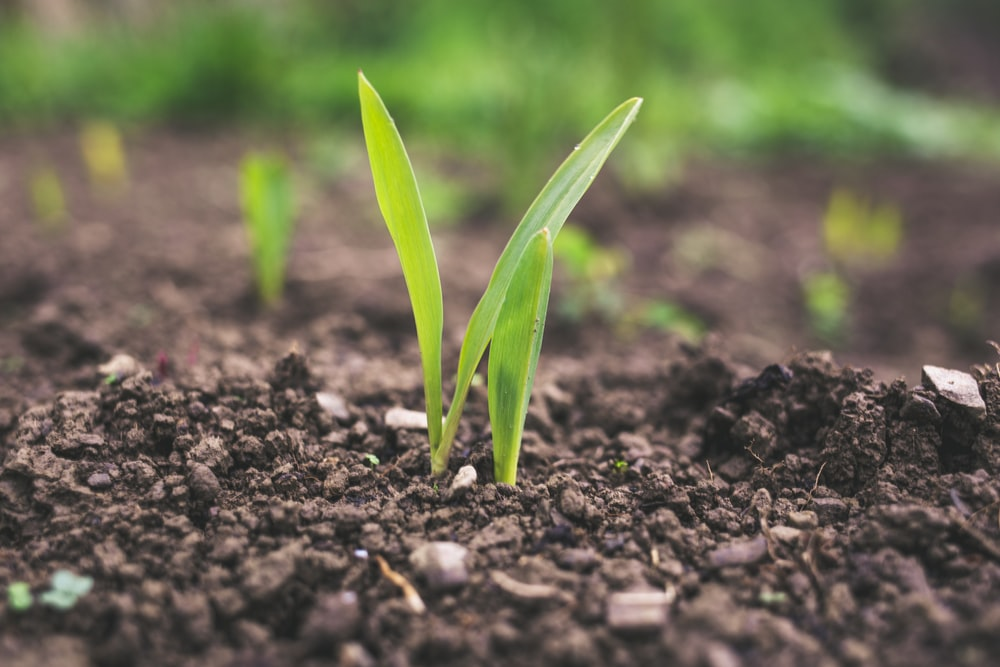

Kharif crops, monsoon crops or autumn crops are domesticated plants like rice that are cultivated and harvested in India. Pakistan and Bangladesh during the Indian subcontinent's monsoon season, which lasts from June to November depending on the area Sown in June-July when rains first begin (Monsoon crop)..Example: Rice, Jowar, Bajra, Maize, Cotton, Groundnut, Jute, Sugarcane, Turmeric, Pulses (like Urad Dal) etc.
The rabi crops are sown around mid-November, preferably after the monsoon rains are over, and harvesting begins in April / May. The crops are grown either with rainwater that has percolated into the ground, or using irrigation. A good rain in winter spoils the rabi crops but is good for kharif crops. Example: Wheat, Oat, Gram, Pea, Barley, Potato, Tomato, Onion, Oil seeds (like Rapeseed, Sunflower, Sesame, Mustard) etc.
Zaid crops are summer season crops . They grow in long time period mainly from March to June. These crops are mainly grown in the summer season during a period called the "Zaid crop season. They require warm dry weather as major growth period and longer day length for flowering. Example: Cucumber, Bitter Gourd, Pumpkin, Watermelon, Muskmelon, Moong Dal etc.